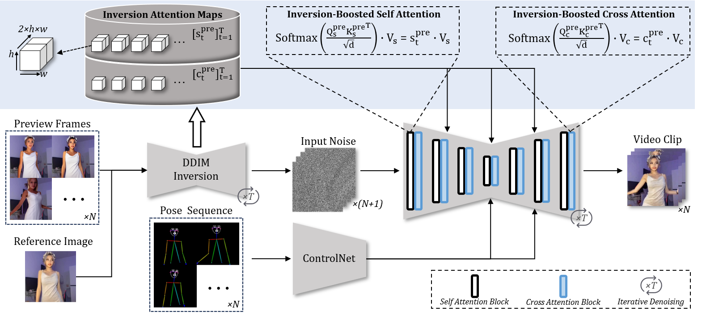

FreeAnimate: Training-Free Human Image Animation with Preview-Guided Denoising
-
Anonymous Submission
Abstract
Human Image Animation has seen significant advancements, primarily driven by diffusion models. However, existing HIA methods typically demand substantial training data and resources to achieve high-quality results, limiting generalization and accessibility. In this work, we introduce FreeAnimate, a training-free framework that leverages the inherent capabilities of image diffusion models to enable temporal consistency, identity preservation, and background stability. Our approach incorporates a novel preview generation strategy that provides temporal and structural priors from generated preview frames, effectively guiding pose alignment and background consistency without training. Additionally, FreeAnimate introduces Inversion-Boosted Attention and Reference-Anchored Self-Attention modules to guarantee temporal consistency and identity preservation. Experimental results demonstrate that FreeAnimate outperforms existing training-free competitors and training-based baseline methods, achieving generation quality comparable to state-of-the-art methods and offering robust generalization across diverse datasets.
Network Architecture
The overview of FreeAnimate. We introduce a novel network architecture that combines a U-Net with ControlNet, offering a more efficient approach to incorporating reference image content and structure into the U-Net without relying on CLIP image encoder or Appearance Net. Specifically, our method incorporates three crucial components in addition to the basic SD model: Control branch, Inversion-Boosted Attention, and Reference-Anchored Self-Attention.

Control Branch
The Control Branch is responsible for effectively incorporating pose guidance into the generation process. It leverages a pre-trained ControlNet to encode the pose sequence and injects this information into the U-Net. Unlike traditional methods that require additional training or fine-tuning, our approach utilizes ControlNet as a plug-and-play module, enabling the model to directly align generated frames with the provided pose sequence. This setup avoids the need for large-scale training and ensures that the generated video follows the desired pose sequence while maintaining computational efficiency.
Inversion-Boosted Attention
Inversion-Boosted Attention (IBA) improves temporal consistency by leveraging attention maps extracted from preview frames during DDIM inversion. These maps refine both self- and cross-attention, enhancing video coherence and structural stability.
Inspired by FateZero, IBA uses DDIM inversion attention maps to guide denoising. At each step \( t \), we store the self-attention maps \( \left[\textit{s}_{t}^{\text{pre}}\right]_{t=1}^{T} \) and cross-attention maps \( \left[\textit{c}_{t}^{\text{pre}}\right]_{t=1}^{T} \) as follows:
where \( \operatorname{DDIM-INV} \) represents the DDIM inversion process. During denoising, these attention maps refine the attention computation:
Here, \( Q_{s}^{\text{pre}}, K_{s}^{\text{pre}}, V_{s} \) and \( Q_{c}^{\text{pre}}, K_{c}^{\text{pre}}, V_{c} \) denote the query, key, and value projections for self- and cross-attention, respectively, with \( d \) being the attention feature dimension.
By leveraging precomputed self- and cross-attention maps, IBA helps preserve motion integrity and spatial structure while reducing artifacts. These maps act as guidance signals, improving both temporal coherence and structural alignment during generation.
Reference-Anchored Self-Attention
Reference-Anchored Self-Attention (RA-SA) improves temporal consistency by anchoring frames to a reference image. By integrating both the current and reference latents, RA-SA enhances identity preservation throughout the video.
Specifically, \( \text{SELF-ATTENTION}(Q, K, V) \) for the latent code \( z^{i}_{t} \) of frame \( i \) at time step \( t \) is computed as:
where \( W^Q \), \( W^K \), and \( W^V \) are projection matrices from the U-Net, and \( \left[\cdot\right] \) denotes concatenation. \( z^{i}_{t} \) and \( z^{a}_{t} \) represent the latents of the current and anchor frames, respectively. While **Pixel2Video** and **FateZero** set \( a \) to \( 1 \) and \( \left\lfloor \frac{N}{2} \right\rfloor \), we use \( I_{ref} \) as the anchor frame for improved alignment.
During DDIM inversion, RA-SA replaces standard self-attention, modifying the self-attention map dimensions from \( R^{hw \times hw} \) to \( R^{hw \times 2hw} \). In the denoising process, query and key features originate from DDIM inversion attention maps, while value features are computed dynamically using the current and reference latents:
Preview Generation Strategy
The overview of Preview Generation Strategy. We propose a general strategy to generate preview frames closely aligned with the target frames in HIA tasks, enabling more accurate generation using powerful pretrained models.
Comparisions with Existed Approaches
we present a qualitative comparison of FreeAnimate with other methods. FreeAnimate demonstrates competitive performance against training-based approaches, with visually superior generation quality compared to the well-established baseline, DisCo. Since our method is training-free, it exhibits strong generalization across various datasets.
Animation on TikTok Dataset
Animation on TED-talks Dataset
Animation on EverybodyDanceNow Dataset
Other domain results
FreeAnimate exhibits robust generalization capabilities on Other domains. We use StableAnimator's pose alignment method to align the poses between the driving video and the reference image. Below, the left side of each video shows the driving pose, and the right side shows the aligned pose.
We also present animation results on cartoon characters to demonstrate FreeAnimate's generalization capability.
Acknowledgements
The website template was borrowed from Michaël Gharbi and Mip-NeRF.